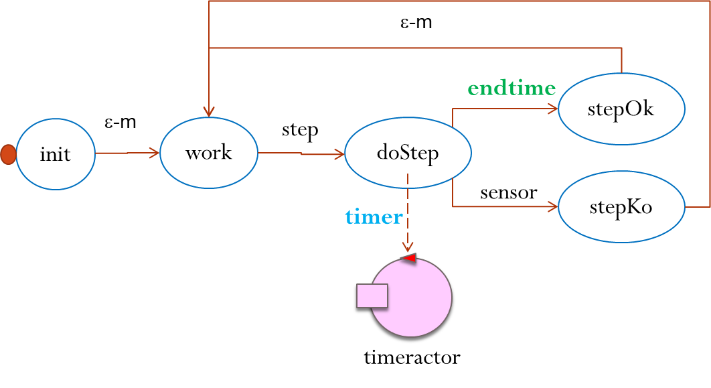
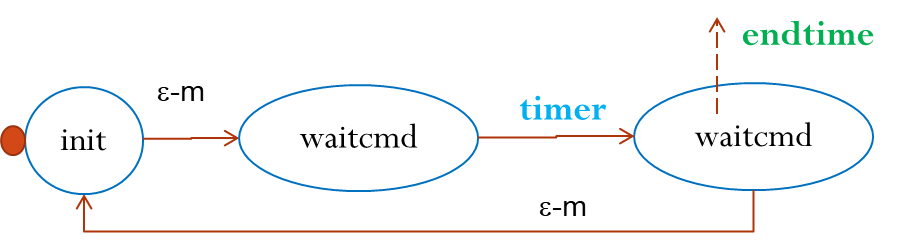

Introduction
This report follows the first SPRINT review meeting related to the RobotActorBoudary project. After this review, we will propose a new layered architecture that solved the robotboundary problem by means of a set of actors, whose behavior is expressed as a Finite State Machine using the custom DSL language introduced in FSM | A kotlin-based DSLRequirements
See RobotActorBoudary | requirementsRequirement analysis
With reference to our first-sprint RobotActorBoudary | requirement analysis, let us now:Define a formal model of the requirements (and functional TestPlans )
Since our software must move the robot along the room-boundary, we must At this stage, we can say that, if the customer does exclude the possibility to equip the robot of the room with other sensors, there is the need to introduce a
Let us imagine to subdivide the room into a grid of nr * nc squares of side R.
|
|
|r, 0, 0, 0, 0, 0, |0, 0, 0, 0, 0, 0, |0, 0, 0, 0, 0, 0, |0, 0, 0, 0, 0, 0, |0, 0, 0, 0, 0, 0, |
|1, 1, 1, 1, 1, 1, |1, 0, 0, 0, 0, 1, |1, 0, 0, 0, 0, 1, |1, 0, 0, 0, 0, 1, |1, 1, 1, 1, 1, 1,Let us call this representation as |
r means: cell occupied by the robot0 means: cell not explored1 means: cell exploredX means: cell occupied by an obstacle
A mapUtil
A proper support for the room-map can be given by the following utility:
|
src/mapRoomKotlin/mapUtil.kt (project it.unibo.kotlin.actorRobot) |
|
Problem analysis
With reference to our first-sprint RobotActorBoudary | problem analysis, let us now: we can say that the problem is quite clear and the logical architecture includes just two actors:
Refine the functional TestPlans
The proposed testPlan consists in introducing a representation of the room-space and check that the robot has effectively explored the space along the boundary.Suppose that the robot device can be inscribed in a circle of diameter R. In this case, we could imagine to subdivide the room into a grid of nr * nc squares of side R.
Under this hypothesis, the problem requires the introduction of another robot-move: the
In this way it will be possible not only to properly update the map, but it becomes also possible to evaluate the length of the room boundary in
Moreover, the availability of a map-representation can be very useful to give to the user information about the run-time evolution of the system.
Lesson learned: the effort to express in a formal way
Step-wise robot moves
In order to move the robot in aTest plans
Our test-plan can be nowassertTrue(mapUtil .map.toString() ==refTestMap )
Project
Taking into account the results of our problem analysts, we propose now:A new layered logical architecture (Fig. 1)
BEHAVIOR
In order to express the behavior of each actor as a Moore's Finite State Machine we will introduce a proper language-support by exploiting the Kotlin capabilities to define custom 'internal' DSL: see FSM | A kotlin-based DSLWORK TO DO
- Design, build and test the
basicrobot of Fig1 by specifying its behavior with the custom DSL language provided by fsm/Fsm.kt - Design, build and test the
stepper of Fig1, by specifying its behavior with the custom DSL language provided by fsm/Fsm.ktstepper
 timer

By AN Unibo-DISI